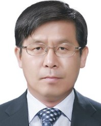

인사말
주식회사 에이아이에코젠랩은 ‘한우 유전능력 맞춤형 사양기술 서비스’에 대한 특허와 기술이전 포트폴리오를 보유하고 있습니다.
한우 유전능력 서비스 적용을 통하여 농가소득 증가 효과를 확인하였습니다.
본사의 대표이사는 전남대학교 유전공학과 (현 분자생명공학과) 교수로 재직시 한국과학재단 지정 국가지정 ‘영양유전체 (nutrigenomics)’ 실험실 연구 (2007년 ~ 2011년)를 통하여 ‘한우 유전자 맞춤형 사양기술’에 대한 노하우를 확보하였습니다.
본사의 대표이사는 서울대학교 교수로 재직하면서 ‘반추동물영양생리학 실험실’에서 지속적인 연구를 통하여 ‘한우 유전정보 맞춤형 사양기술’을 업그레이드하여 노하우를 확보하고 기술 특허를 획득하였습니다. 이러한 업적을 인정받아 과기정통부 지정 ‘2018년 국가연구개발 우수성과 100선’에 선정되었습니다. 따라서, 본사는 ‘한우 유전능력 맞춤형 서비스’ 분야에 대한 고도의 기술을 보유하고 있습니다.
본사는 2023년 교육부·과기정통부 지원 혁신창업실험실로 선정되어 설립하였습니다. 에이아이에코젠랩은 ‘한우 유전능력 맞춤형 사양 기술 서비스’를 비즈니스 모델로 농가 소득 증대를 위해 최선을 다하고 있으며, 한우 산업의 생산성 증진 및 한우의 세계화를 추구하고 있습니다.
한우 산업과 한우 농가는 사료비 상승 등으로 경영에 어려움을 겪고 있습니다. 아울러 구제역, 럼프스킨 등의 질병 및 글로벌 아젠다인 온실 가스 감축에 적극적인 대응이 필요한 상황입니다.
에이아이에코젠랩은 한우산업에 BT, IT, GT, AI 기술을 적용한 통합 서비스 비즈니스 모델의 필요성을 인식하여, 유전능력 기반 메탄 저감 및 인공지능 접목 서비스 사업으로 업그레이드하여 한우 산업의 생산성을 획기적으로 향상시키고자 합니다.
주식회사 에이아이에코젠랩은 연구중심 랩에서 ‘한우 농가 등 고객 중심의 기업으로 발전’을 위해 노력하겠습니다.
감사합니다.
주식회사 에이아이에코젠랩 대표 백명기

 2018년 국가연구개발 우수성과 100선
2018년 국가연구개발 우수성과 100선